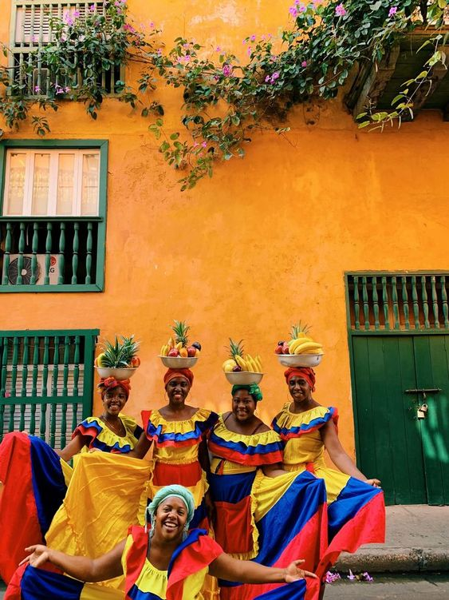
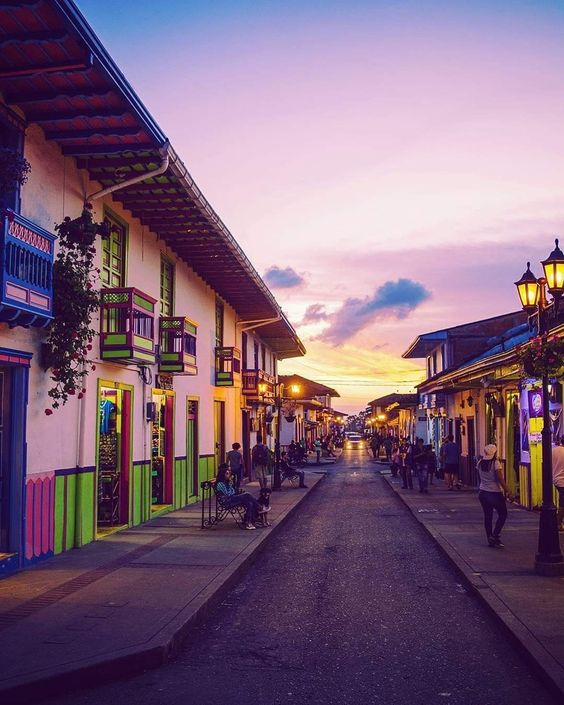

Cultura
San Gil, ubicado en Santander, es un epicentro cultural en la región. Sus festivales, como el Festival del Sombrero Vueltiao y el Festival de la Cultura Nativa, celebran la riqueza cultural de la zona, con música, danzas y artesanías tradicionales. Además, su gastronomía refleja la identidad santandereana.


Tradiciones
San Gil, en Santander, atesora un rico legado de tradiciones. La Semana Santa es un evento destacado con procesiones y representaciones religiosas. Además, la Feria Bonita y el Reinado Nacional del Bambuco son festivales que honran las costumbres y la música típica de la región, enriqueciendo su patrimonio cultural.